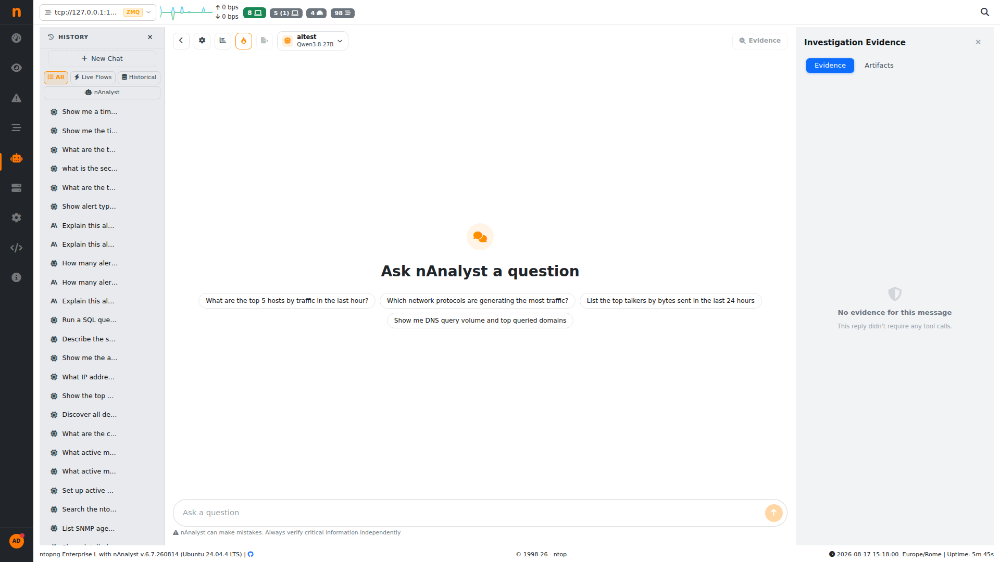
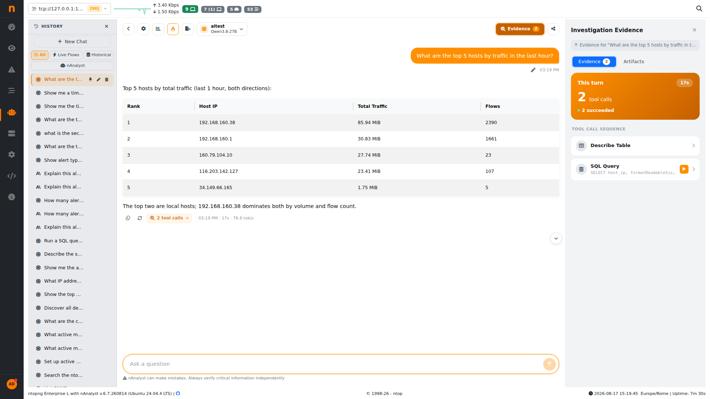
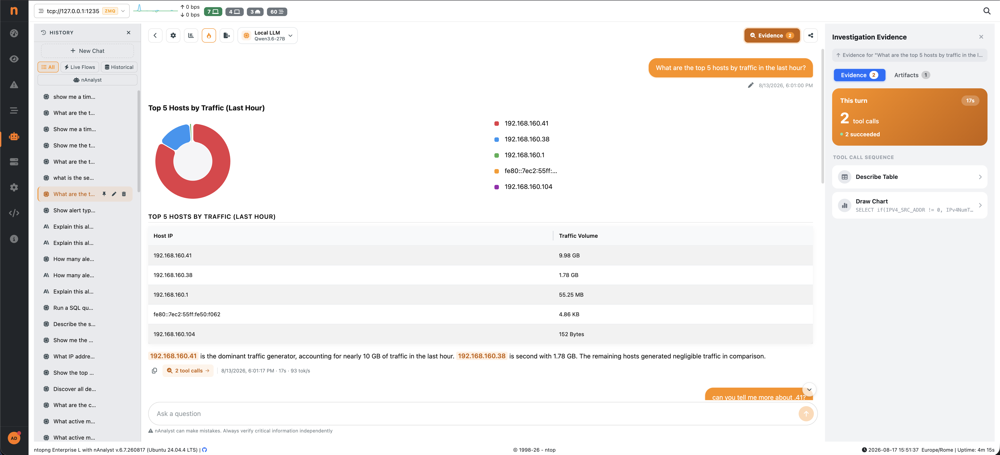

Интерфейс чата
Основной интерфейс nAnalyst — это окно диалогового чата, встроенное в веб-интерфейс ntopng. Оно позволяет аналитикам запрашивать сетевые данные, инициировать действия и просматривать доказательства без написания SQL или перемещения по нескольким панелям мониторинга.

Интерфейс чата nAnalyst
Доступ к чату
Чат nAnalyst доступен из меню ntopng -> nAnalyst. Каждый разговор привязан к аутентифицированному пользователю и сохраняется во всех сеансах браузера, поэтому сохраняется контекст предыдущих расследований.

Меню Аналитика
Задавать вопросы
Вопросы можно задавать на простом английском языке. nAnalyst изначально понимает сетевую терминологию:
"Show me DNS query volume for each hour in the last day and the top queried domains"
"Which hosts contacted the most external IPs in the last 6 hours?"
"Is there any unusual outbound traffic from 192.168.1.50?"
"What applications are consuming the most bandwidth on the LAN?"
Агент будет:
Выберите соответствующие инструменты и источники данных
Выполните необходимые SQL-запросы
Верните структурированный ответ со встроенными диаграммами и таблицей доказательств.
Предложите действенные следующие шаги
Чтение ответа
Каждый ответ nAnalyst состоит из трех частей:
- Отвечать
Доступное объяснение того, что было найдено, основанное на собранных доказательствах.
- Журнал доказательств
Свернутый, но расширяемый раздел, показывающий каждый вызванный инструмент, выполненный SQL и возвращенные необработанные результаты. Это гарантия «отсутствия черного ящика» — вы можете проверить каждую претензию.
- Предлагаемые дальнейшие действия
При необходимости nAnalyst предлагает последующие расследования или действия, такие как создание политики, добавление сценария активного мониторинга или отключение заведомо исправного оповещения.

Ответ Аналитика

nЖурнал доказательств аналитика

nAnalyst предлагает следующие шаги
Встроенные диаграммы
Когда запрос возвращает временные ряды или ранжированные данные, nAnalyst автоматически создает и встраивает диаграмму (линию, гистограмму или таблицу) непосредственно в ответ чата. Диаграммы интерактивны и готовы к экспорту.

Линейный график nAnalyst

Круговая диаграмма аналитика
Смотрим, что может сделать агент
В шапке чата есть Инструменты кнопка (значок панели инструментов). Это открывает Каталог инструментов — полный список доступных инструментов агенту в этом экземпляре, каждый со своим описанием, лицензией, которая разблокирует его и его аннотации (только для чтения или для записи, создает ли он артефакт диаграммы, нужен ли ему ClickHouse). Используйте его, чтобы понять возможности помощника и что добавит обновление лицензии.
Многоходовые разговоры
nAnalyst поддерживает контекст между ходами сеанса. Вы можете задавать уточняющие вопросы, не повторяя контекст:
Turn 1: "Show me the top talkers on the LAN"
Turn 2: "Investigate the top one further"
Turn 3: "Create a policy to alert if that host exceeds 100 Mbps"
История сеансов сохраняется, поэтому расследования можно возобновить после перезагрузки страницы или на следующий день.